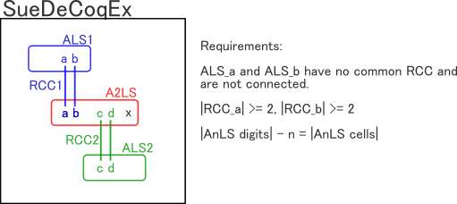
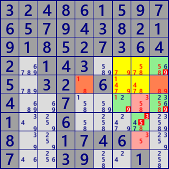
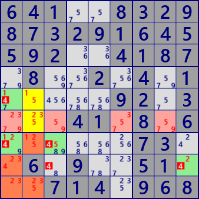
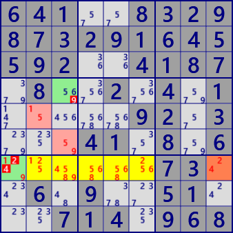
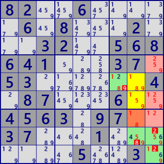
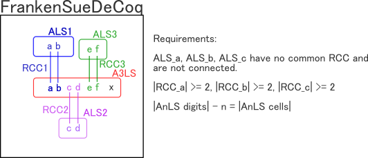
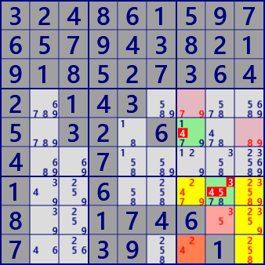
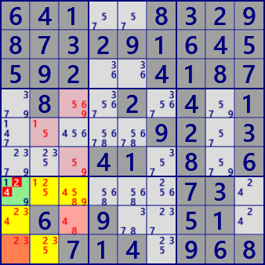

SueDeCoqEx, Franken SueDeCoq
オリジナル SueDeCoq から、成立条件を拡張します。
SueDeCoqEx
SueDeCoqの仕組みは、A2LSと2つのALSを組み合わせた ”Locked” と解することができます。SueDeCoqExの成立要件は次のとおりです。
- [SueDeCoqEx の成立条件]
- A2LSと2つのALSがある(ALS_a,ALS_b)。2つのALSに重なりはない。 (”重なり”条件は、外せるかもしれない。...> v5.1)
- A2LSとALS_aにはRCC_aがある。A2LSとALS_bにはRCC_bがある。|RCC_a|>=2、|RCC_b|>=2とする。
- RCC-aとRCC-bに重なりはない。
- |A2LSの数字| - 2 = |A2LSのセル|
A2LSとALS_aは2つ以上のRCCで連結しているので、ALS_aには必ずRCCの1個の数字があります。したがって、A2LSには残りの数字があります。 A2LSとALS_bについても同じです。 すると、A2LSに残された数字の数と、セル数が一致ます。これはA2LSが "Locked" になることを意味します。 従って、”A2LS,ALS_a,ALS_b"が一組の Locked" になります。

[SueDeCoqEx の成立条件]にみられるように、A2LS、ALSには、行・列・ブロックの条件はありません。RCCで連結してことだけが条件です。

SueDeCoqExstem AnLS : r45c78 #145789
1st ALS : r5c59 #189 RCC;#19
2nd ALS : r68c8 #358 RCC;#58
exclude : r4c9#9 r6c7#9 r6c9#9 r7c8#35

SueDeCoqExstem AnLS : r56c2 #1235
1st ALS : r7c2 r8c1 r9c12 #12345 RCC;#15
2nd ALS : r6c1368 #23579 RCC;#23
exclude : r5c1#4 r7c1#4 r7c3#4 r8c3#4 r8c9#4

SueDeCoqExstem AnLS : r7c23456 #1245689
1st ALS : r7c9 #24 RCC;#24
2nd ALS : r5c2 r6c3 #159 RCC;#19
exclude: r4c3#9 r7c1#24

SueDeCoqExstem AnLS : r56c8 #1589
1st ALS : r7c8 #18 RCC;#18
2nd ALS : r467c9 #1259 RCC;#59
exclude: r5c7#9 r8c8#8 r8c9#2 r9c9#2
3248615976579438219185273642.143....5.32.6...4..7.....1..6.....8..1746..7..39..1.
641..8329873291645592..4187.8..2.4.1.....92.3...41.8.6......73..6.9..51...714.968
82..6.....6.8...2...32..568641...37.53......4.87...6..4563.97..37...1.......5..3.
（hp"HoDoKu"の問題を使っています。）
Franken SueDeCoq
"SueDeCoqEx"は、自然な延長でさらに拡張します。
A3LSが、互いに素な3つのALS(ALS_a,ALS_b,ALS_c)と、RCCで連結しているとします。これを "Franken SueDeCoqEx"とします。
- [Franken SueDeCoq の成立条件]
- A2LSと3つのALSがある(ALS_a,ALS_b,ALS_c)。3つのALSに重なりはない。 (”重なり”条件は、外せるかもしれない。...> v5.1)
- A2LSとALS_aにはRCC_aがある。A2LSとALS_bにはRCC_bがある。A2LSとALS_cにはRCC_cがある。 |RCC_a|>=2、|RCC_b|>=2、|RCC_c|>=2とする。
- RCC-a、RCC-b、RCC-cに重なりはない。
- |A2LSの数字| - 3 = |A3LSのセル|

Franken SueDeCoqの成立の仕組みは、SueDeCoqExと同じです。

Franken SueDeCoqExstem AnLS : r7c79 r89c9 #2345789
1st ALS : r9c7 #24 RCC;#24
2nd ALS : r8c8 #35 RCC;#35
3rd ALS : r4c7 r5c9 #35 RCC;#78
exclude : r5c7#4 r7c8#345

Franken SueDeCoqstem AnLS : r7c23 r8c1 r9c2 #1234589
1st ALS : r9c1 #23 RCC;#23
2nd ALS : r8c3 #48 RCC;#48
3rd ALS : r46c3 r5c2 #48 RCC;#19
exclude: r7c1#24
3248615976579438219185273642.143....5.32.6...4..7.....1..6.....8..1746..7..39..1.
641..8329873291645592..4187.8..2.4.1.....92.3...41.8.6......73..6.9..51...714.968
（hp"HoDoKu"の問題を使っています。）